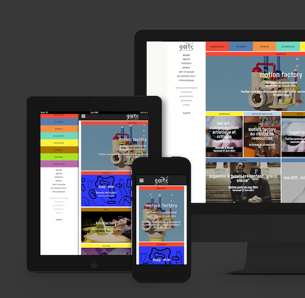

Portfolio
Mind the Gaps - un système ouvert pour mesurer la qualité de vie dans les villes.

UX research pour ce ce projet de l'Open Data Institute à Londres pour explorer des usages innovants de données ouvertes entre la France et l'Angleterre.
Mind the Gaps propose plusieurs outils et méthodes pour produire des données à partir de témoignages citoyens, inspiré des mouvements de 'citizen science' menés notamment à Barcelone (Smart Citizen) et Bristol (the Bristol Approach).
Ce projet a pour point de départ le "Quality of life survey" de Bristol, il questionne le lien entre données disponibles et politiques publiques, la manière dont les informations sont collectées et utilisées (ou non) à Bristol et Bordeaux, villes jumelées.
Plus de détails sur notre processus centré sur des données citoyennes ici.
La Gaîté lyrique - art et cultures numériques
Chargée de communication web de 2013 à fin 2016.
Editorialisation et refonte du site, production et commande de contenus, email marketing, rédaction-correction, partenariats...


Quelques chiffres : Plus d'un millier d'évènements par an (expositions, festivals, concerts, conférences, projections, ateliers...)
et une moyenne de 60k visiteurs uniques par mois sur le site.
Trois grands projets
Refonte du site

Oracles du design

Paris Musique Club

1. La refonte du site
Ancienne version

Nouvelle version
Key updates:
- Drupal 6 à 7
- Responsive design
- Navigation simplifiée, réorganisation d'arborescence
- Esthétique rafraîchie
Mon rôle
- Product management, roadmap éditoriale, modélisation de "user journeys"
- Amélioration du CMS
- Communication interne et collecte de retours
- Analyse de métriques post-refonte
L'équipe
- Conseil et développement : agence web Bunker Palace
- Direction artistique : Yorgo&co
- Parties prenantes Gaîté lyrique : direction, accueil, partenariats, développement, équipe communication et artistique, etc.
Conclusions
- Retours qualitatifs: esthétique plus proche de l'identité du lieu, meilleure compréhension de la vocation pluridisciplinaire du lieu.
- Gain de temps considérable en interne, pour la personne en stage web et moi-même.
- Forte réduction des taux de rebond.
2. Oracles du design
Mini-site conçu pour l'exposition courant 2015, tirée des collections du CNAP par la commissaire Li Edelkoort.

L'exposition jouait avec le potentiel anthropomorphique (tendance à attribuer aux choses des réactions humaines) de certains objets. Elle demandait : les objets peuvent-ils exprimer une personnalité ?
La sélection d'objets a été divisée en dix groupes :Simple • Nomade • Abstrait • Organique • Humble • Naïf • Mutant • Curieux • Gonflé • Archaïque


Questions:
• Comment transposer le propos d'une exposition en une expérience en ligne, comment rendre le ton ludique qui y règne ?
• Quelle expérience en ligne pour le public d'un lieu sur les cultures numériques lors d'une exposition d'objets physiques ?
Nous avons repris la catégorisation de l'exposition, en proposant de répondre avec légèreté à la question :
À quelle tribu appartenez-vous ?


Le test
- Test "de personnalité" responsive et bilingue (français et anglais)
- Une série de dix questions et résultat :
- le nom de sa tribu, citations tirées de l'exposition
- data visualisation des résultats
- partage facilité sur les réseaux sociaux (Facebook et Twitter)
Mon rôle
- Game design
- Script bilingue pour les questions et réponses
- Stratégie d'utilisation du contenu d'exposition au-delà de la proposition "physique", stratégie de partage sur les réseaux sociaux
- Gestion de projet, lien avec la commissaire et l'agence web
3. Paris Musique Club
Application developpée avec la Red Bull Music Academy pour une exhibition interactive et 12 semaines de cartes blanches à des labels de musique parisiens.

Opportunités
- Red Bull est une marque pionnière dans la stratégie de création de contenu qualitatif. En lieu partenaire, nous avons tout intérêt à unir nos ressources pour continuer dans cette veine.
- La Red Bull Music Academy a une immense communauté internationale : nos publics ont des intérêts communs.
- Le collectif d'artistes invité maîtrise la production audiovisuelle. Dans le cadre de la collaboration, ils vont nous aider à documenter l'exposition.


Vidéos
L'exposition : Un making-of et cinq installations interactives : Immorphosis, Playground, 1020s, Résistance, Terminal.
Les cartes blanches :
Portraits de douze labels de musique : Antinote • Barbi(e)turix • Born Bad Records • Brut pop • ClekClekBoom • Collectif MU • InFiné • In Paradisum • Mawimbi • Potemkine • Sonotown • la Souterraine.
Voir la playlist sur Youtube.L'application
- Playlists, portraits vidéo, vidéos backstage, le programme semaine par semaine et un usage interactif avec une installation..
- Compatible iOS et Android
Mon rôle
- Partenariats pour campagnes réseaux sociaux et application interactive avec l'exposition.
- Gestion en interne : tournage, montage et publication des portraits des douze labels. Contenu bilingue.
- Gestion de projet avec parties prenantes internes et externes.
- Product management, roadmap éditoriale, modélisation de "user journeys"